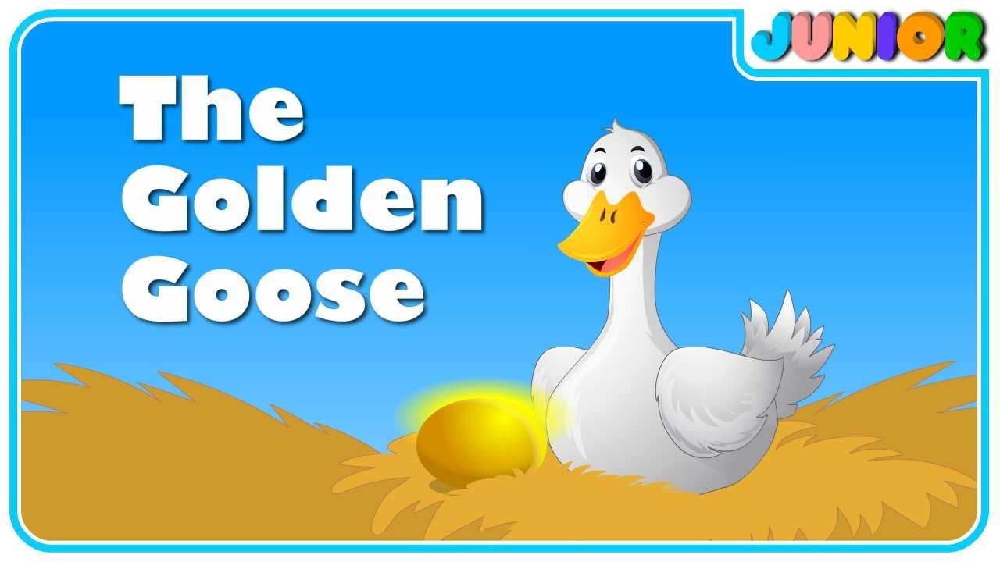

1. The Lion and the Mouse
Once upon a time, a lion was sleeping in the jungle. A little mouse ran up and down on him, which woke him up.
The lion caught the mouse and was about to eat him.
The mouse pleaded, "Please let me go! Someday, I will help you!" The lion laughed and let the mouse go.
A few days later, the lion got trapped in a hunter's net. He roared for help. The mouse heard him and rushed to
the spot. The mouse chewed the ropes of the net and set the lion free.
Moral: Kindness is never wasted, and even the smallest creature can help in times of need.
2. The Tortoise and the Hare
A hare once made fun of a slow-moving tortoise. Tired of the hare’s taunts, the tortoise challenged him to a
race. The hare, confident of his speed, quickly ran far ahead and decided to take a nap midway.
Meanwhile, the tortoise kept moving slowly and steadily and eventually crossed the finish line while the hare
was still sleeping.
Moral: Slow and steady wins the race.
3. The Fox and the Grapes
A hungry fox saw a bunch of grapes hanging high on a vine. He jumped and tried to grab them but failed. After
several attempts, he gave up and walked away, muttering, "Those grapes are probably sour anyway."
Moral: It’s easy to despise what you cannot have.
4. The Boy Who Cried Wolf
A shepherd boy, bored while watching his flock, cried out "Wolf! Wolf!" just for fun. The villagers ran to
help, only to find there was no wolf. He repeated this trick several times. One day, a wolf actually came, but
when the boy cried out for help, the villagers ignored him, thinking it was another false alarm.
The wolf attacked the flock, and the boy learned a hard lesson.
Moral: Liars are not believed, even when they tell the truth.
5. The Ant and the Grasshopper
One summer, a grasshopper sang and played while an ant worked hard to gather food for the winter. When winter
came, the grasshopper had no food and begged the ant for help. The ant reminded the grasshopper of his laziness
and refused to share.
Moral: Work today to prepare for tomorrow.
6. The Dog and His Reflection
A dog found a meat and was carrying it in his mouth. As he crossed a bridge, he looked down into the water and
saw his reflection. Thinking it was another dog with a bigger meat, he dropped his own meat and tried to snatch
the larger one. Of course, he lost both meat.
Moral: Don't be greedy, or you might lose what you already have.
7. The Crow and the Pitcher
A thirsty crow found a pitcher with a little water at the bottom. The crow dropped small pebbles into the
pitcher, and as the water rose, he drank it.
Moral: Necessity is the mother of invention.
8. The Golden Goose

A poor farmer had a goose that laid a golden egg every day. One day, he thought, "If I cut the goose open, I
will get all the golden eggs at once." He did so, but found nothing inside the goose. The farmer lost both the
goose and the golden eggs.
Moral: Greed can lead to loss of everything.
9. The Girl and the Starfish
A girl was walking along the beach, picking up starfish and throwing them back into the ocean. An old man asked,
"Why sister? There are thousands of starfish, and you can’t save them all." The girl picked up another starfish
and said, "I made a difference to this one!"
Moral: Every small effort counts, and you can make a difference.
10. The Wise Owl
Once, in a forest, a young bird asked a wise old owl, "How did you become so wise?" The owl replied, "I listened
more than I spoke, observed more than I acted, and learned from everyone and everything around me."
The bird began practicing this and soon became wiser with time, helping others in need.
Moral: Wisdom comes from observation, patience, and listening.